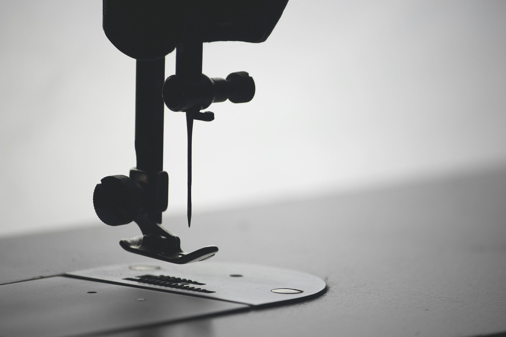
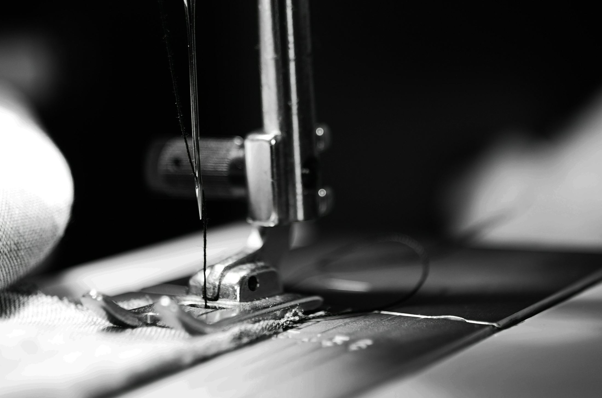

Textil
Kürzen, Weiten, Enger machen, Reißverschlüsse und Reparaturen — für Hosen, Kleider, Anzüge und Jacken jeder Art.

Handarbeit seit Generationen
Änderungsschneiderei für Textilien, Leder, Pelz und Vorhänge — mitten in Lörrach. Kürzen, Enger machen, Reparieren, Maßanfertigen: Wir sorgen dafür, dass Ihre Kleidung wieder passt, wie sie soll.
In der Schneiderei Eren treffen Erfahrung und Geduld auf jedes einzelne Stück, das über unseren Tisch geht. Ob ein Saum, ein neuer Reißverschluss oder die Umarbeitung eines Lieblingsmantels — wir nehmen uns Zeit für die Details, die am Ende den Unterschied machen.
Leistungen
Kürzen, Weiten, Enger machen, Reißverschlüsse und Reparaturen — für Hosen, Kleider, Anzüge und Jacken jeder Art.
Änderungen und Reparaturen an Lederjacken, -mänteln und -hosen. Robustes Material braucht robustes Handwerk.
Fachgerechte Anpassung und Instandsetzung von Pelzstücken — behutsam und mit dem nötigen Spezialwissen.
Kürzen, Säumen und Anfertigen von Vorhängen und Gardinen — passgenau für Ihre Fenster.
Sie sehen Ihr Anliegen nicht auf der Liste? Rufen Sie einfach an — in den meisten Fällen finden wir eine Lösung.

Die Werkstatt
Jede Änderung beginnt mit einem genauen Blick: Wie fällt der Stoff, wo sitzt die Naht, was braucht das Stück wirklich? Erst dann kommt die Nadel zum Einsatz. Diese Sorgfalt ist es, die aus einer Änderung wieder ein Lieblingsstück macht.
Kontakt